Single Equilibrium Stages and Flash Calculations
실제 증류에 사용되는 분리장치는 많은 단으로 이루어진 탑이다. 이를 이해하려면 먼저 한 단을 떼어서 이해할 필요가 있다
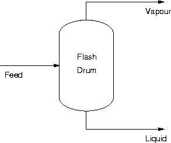
이 단을 살펴보면, 피드가 들어가서 내부에서 평형에 도달한 다음 증기와 액체로 분리되어 나온다. 이때 중요한 것은 평형이다.
4.1 GIBBS PHASE RULE AND DEGREES OF FREEDOM
평형 문제를 풀 때는 변수들이 엄청 많다. 온도, 압력, 조성, 유량 F,V,L, 열량 Q 등등이 다 평형에 영향을 주는 변수이다. 그러나 이 변수들은 평형식, 조성합, 물질수지, 에너지 수지 등등으로 모두 묶여있다. 따라서 일부 변수만 지정해주면 나머지는 자동으로 정해진다. 이때 지정해야 할 독립변수 갯수를 자유도라고 한다.
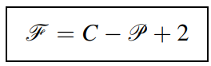
보통 자유도는 평형상태에서 intensive variable(온도, 압력 등)만 따져서 위와 같이 쓰고는 한다. 하지만 실제로는 유량이나 열량, 피드의 물성(조성, 온도, 압력)도 따져야 한다. 따라서 실제 화학공정에 쓰는 확장판 깁스룰이 존재한다. F=C+5이다.
이렇게 확장된 경우에도 피드가 다 지정된 경우에는 자유도가 2가 되어 (압력+조성, 압력+온도, 온도+조성) 이렇게 2개만 주어져도 문제를 해결할 수 있다.
4.2 Binary Vapor–Liquid Systems
이제 2성분 혼합물을 살펴보자. 보통 2성분계의 평형 분리는 너무 오래된 주제이므로, 이에 대한 실험 데이터가 이미 싹 존재한다. 따라서 2성분 혼합물이 액체와 증기로 평형을 이룰 때, 조성·온도·압력 관계를 표와 그래프로 읽는 법이 중요하다. (요즘은 못읽어도 시뮬레이터로 대체 가능하다)
지금 액체인지, 증기인지, 두 상이 같이 있는지, bubble point / dew point가 뭔지, 증기 조성과 액체 조성을 어캐 읽고 얼마나 증발해서 V랑 L이랑 몇%인지 까지 판단할 수 있어야 한다.
이때 VLE라는 것은 두 성분이 증기와 액상으로 나뉘어 평형인 상태를 의미한다. 2성분 VLE에서는 자유도가 2이다. 간단하게 예시를 살펴보자.
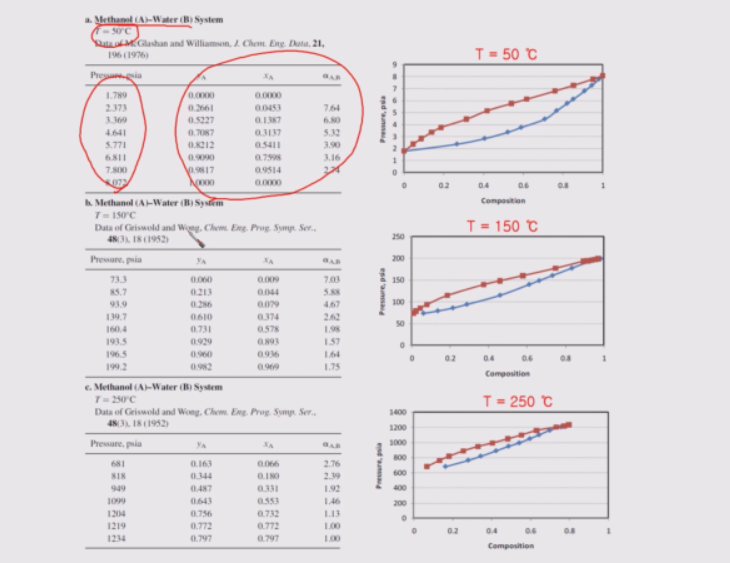
위 사진은 메탄올-물 혼합계이며 2성분 VLE이다. 이 경우 자유도가 2가 된다. 따라서 온도와 압력이 주어지면 평형상태에서 기상과 액상 조성은 고정된다. 따라서 이 때의 separation factor인 a값도 정해진다. 이때 a값을 대충 볼 수 있는 방법이, 두 그래프 사이의 간격이다. 이게 넓을 수록 상대휘발도 a가 커진다. 이때 2성분 VLE에서는 온도가 높아질 수록 a가 작아지는 걸 볼 수 있다.
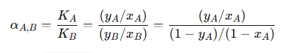
계속 온도를 올리면 어느 지점에서는 액상 조성과 기상 조성이 같아지는데, 이때가 바로 α=1인 상태이고, 더 이상 증류 분리가 불가능한 상태이다. 이는 critical point에 근접하기 때문이다.
참고로 위에 나온 그래프는 실제 실험데이터이지만, 이걸 activity coefficient model로도 나타낼 수 있다.(극성계이기 때문에 eos는 별로다). 하지만 정확도는 크리티컬에 다가갈 수록 떨어지게 된다.
이때 중요한 것은, VLE를 세 가지 방식으로 나타내주는 그래프가 있다.
(1) Txy diagram (압력 고정)
(2) yx diagram (압력 고정): 평형일 때 액체 조성 x와 기체 조성 y가 서로 어떻게 대응되는가
α가 커지면 곡선이 y=x에서 더 벗어나고, 분리가 더 잘 된다. -> y=x와의 거리로 분리 난이도를 바로 판단
q-line, operating line, McCabe-Thiele 같은 그래픽 해석에 바로 연결됨
(3) Px diagram (온도 고정)
이 세개의 그래프는 각각 나타내는 정보가 다르다.
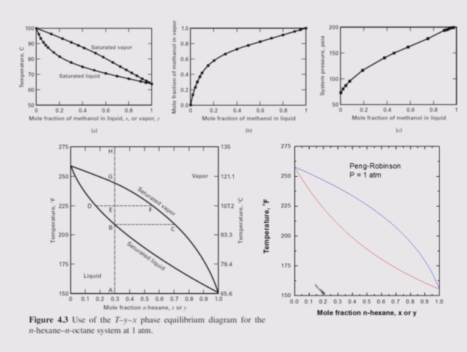
Txy diagram에서는 tie line을 그려서 액상 기상 조성과, V,L 비율을 알 수 있다.
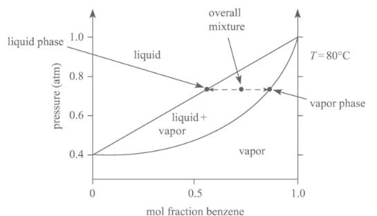 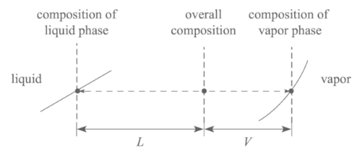 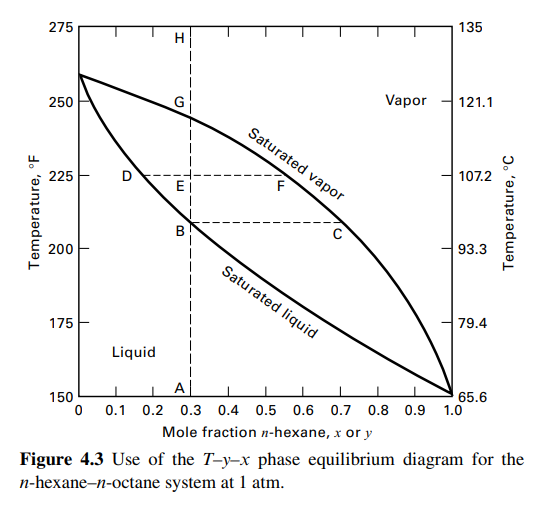
이제 XY 다이어그램으로 가보자. 압력 고정 상태에서 액체 조성 x 를 주면 평형 증기 조성 y 를 바로 읽게 해주는 그래프이다. 항상 45도선 y=x가 같이 있다. 곡선이 45도선에서 멀수록 분리 잘 된다.
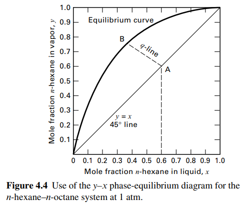
이때 저기 곡선은 평형을 의미한다. 이제 여기에 분리 장치의 물질 수지를 세워 q-line을 그릴 것이다( 의미는 나중에 설명) . 실제 장치에서는 물질수지도 맞아야 하므로, 평형조건외에 물질 수지를 세우는 것도 중요하다. 물질 수지식을 정리하면 q-line이 된다.
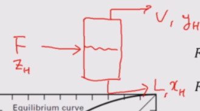 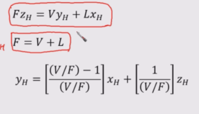
왼쪽의 F가 들어가고 이때 조성이 ZH인데, 평형 이후 V와 L로 나온다고 해보자. (H=헥세인) 이때 헥세인에 대한 물질수지를 세우면 오른쪽과 같고, 여기서 증기 조성 yh에 대해 정리하면 위와 같다. 이건 y-x사이 관계식이므로, x-y 다이어그램에 표현할 수 있게 된다.
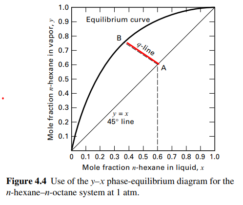
이때, 표현하게 되면 약간 가로지르는 라인이 형성되는데, 이걸 q-line이라고 한다.
q-line은 “이 feed와 이 분할비 F,V,L를 만족하는 x,y 조합”을 나타내는 물질수지선이다.
즉 평형선은 “평형이라면 x와 가 어떻게 연결되나”, q-line은 “우리 장치 물질수지상 와 y는 어떻게 연결돼야 하나”
이때, 장치 안에서 나오는 액체 조성 x, 기체 조성 y는 평형도 만족해야되면서 물질 수지도 만족해야 한다. 따라서 q-line은 물질수지가 맞는 궤적인 것이고, 평형선은 평형이 맞는 궤적이다. 즉 이 둘의 교점에서는 평형과 물질 수지가 모두 만족된다.
즉 피드는 A포인트에서 들어와서 평형이 되므로 B상태에서 나간다. 이때 X좌표는 리퀴드의 조성이고 Y좌표는 베이퍼의 조성이다.
이게 근데 왜 q라인인가? q=L/F로 정의하기 때문이다. 따라서 식은 다음처럼 간단해진다.
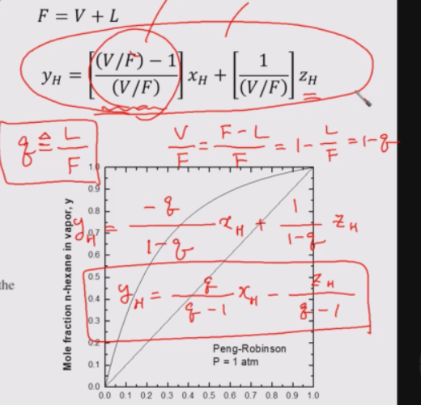
그럼 평형선은 어떻게 구하는가? 이에 대해 알려면 평형선 모양을 정하는 a값을 알아야 한다.
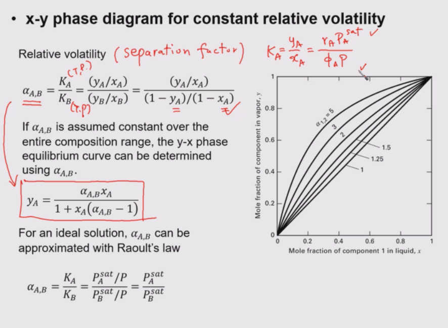
a값은 K의 비율로 정하며, 이 a값의 식을 전개해서 정리하면 y와 x의 관계식이 나온다. 이건 직선은 아니고 약간 휘어진 선모양이 된다. 이것이 바로 평형선이다. 이때 a는 상수로 두면 안되지만, 두 성분의 끓는점 차이가 아주 크지 않은 경우에는 α가 크게 변하지 않는다고 보고 top과 bottom의 평균값 정도로 상수 취급할 수 있다. 이때 a값에 따라 평형선이 바뀌게 된다.
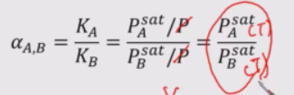
이상기체-이상용액이라면 fugacity coefficient와 activity coefficient를 1로 두어 α를 두 성분의 포화증기압 비로 구할 수 있다.
4.3 BINARY AZEOTROPIC SYSTEMS
그럼 q-line + 평형선(α로 근사한 x-y curve)을 구해서 x-y 도표에 나타내서 교점을 구하면 그게 증류 조성인 것이다. 하지만 어느 조성에서는 이러한 그림이 깨질 수 있다. 이건 평형선의 문제로 인해 발생하는데, 평형선이 D모양이면 좋지만 &모양처럼 막 꼬일 수가 있다. 그것은 아제오트로프상태일 경우이다.
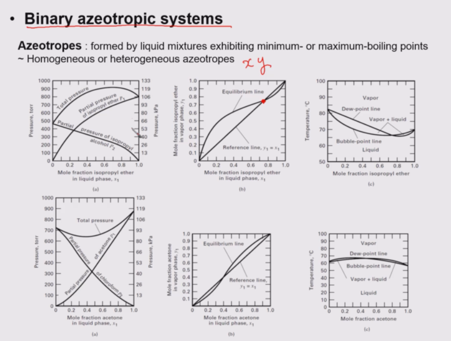
어떤 2성분 혼합물은 특정 조성에서 액체 조성과 증기 조성이 완전히 같아져서, 증류로 더 이상 분리할 수 없는 점이 생긴다. 그게 azeotrope다. 이때는 기액조성이 같고, K 값이 1이되며 상대 휘발도 a도 1이 된다.
여기서 2번째 XY그래프를 보면 아제오트로프를 알 수 있다. 평형선이 한번 Y=X를 지나가는 경우이며 q-line은 여전히 그릴 수 있지만, 특정 조성에서는 Y=X가 되므로 공비 조성에 가까워질수록 액상 조성과 기상 조성 차이가 적어져 분리가 잘 안된다.
공비인지 아닌지를 판단할 때, 중간 조성에서 total pressure의 최대/최소 같은 극값이 보인다거나, T-X선도에서 이슬점 버블점 라인이 겹친다거나 할 때 바로 공비를 의심할 수 있다. 이 경우 총압이 극대가 되면 미니멈 템퍼 공비점이고 총압 극소면 맥시멈 템퍼 공비점이 형성된다.
- 어떤 조성에서 총압이 높다
→ 같은 외부압에 도달하기 쉬움
→ 끓는점이 낮아짐
→ minimum-boiling azeotrope - 어떤 조성에서 총압이 낮다
→ 끓으려면 더 높은 온도 필요
→ 끓는점이 높아짐
→ maximum-boiling azeotrope
4.4 MULTICOMPONENT FLASH, BUBBLEPOINT, AND DEW-POINT CALCULATIONS
일단 이성분계에서는 자유도가 2이고, 2개가 주어지면 나머지 변수를 정할 수 있으며 t-x 선도를 통해 평형시 조성과 비율을 알 수 있었다. 또한 xy 선도에서 q라인과 평형선의 교점을 통해 평형점을 찾을 수 있음도 배웠으며 아제오트로프에 대한 내용도 배웠다.
이제 세 가지 계산을 배울 것이다.
Flash calculation: 주어진 혼합물이 일부는 증기, 일부는 액체가 될 때 각 상의 양과 조성 구하기
Bubble point calculation: “이제 막 첫 기포가 생기는 조건” 구하기
Dew point calculation: “이제 막 첫 액방울이 생기는 조건” 구하기
먼저 플래시부터 보면, 혼합물을 평형단에 넣어 분리하는 기법이다. 이때 증기와 액체가 나온다.
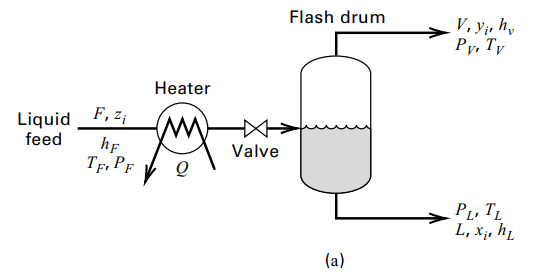
이때 두 자유도로 무엇이 주어지냐에 따라 다음과 같이 문제 유형이 분류된다.
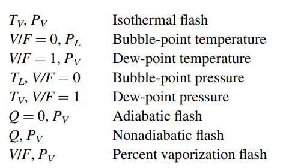
먼저 기본형으로 온도, 압력이 주어지면 K를 계산할 수 있다. 이 K를 이용해서 리치포드 라이스 식을 세우면 V/F를 반복계산으로 구할 수 있다. 이렇게 V/F를 구하고 X와 Y도 구한다.
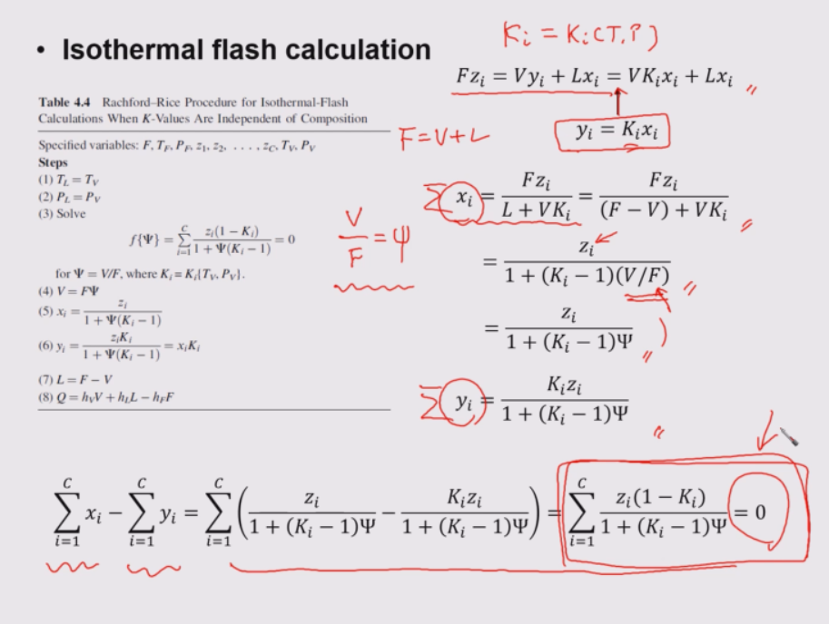
만약 버블점과 듀포인트인 경우에는 리치포드라이스 식이 다음처럼 된다.
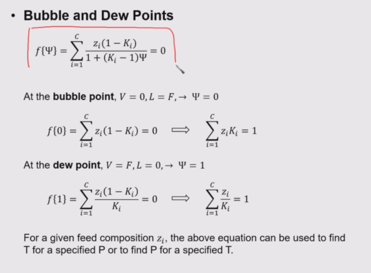 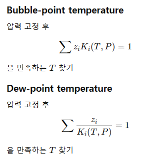 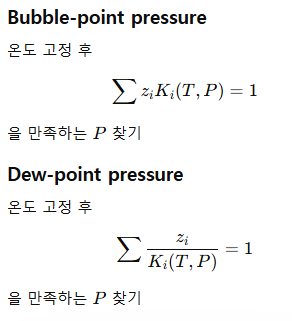
예외로 라울의 법칙이 적용되면 K만 구해도 압력은 구해진다.
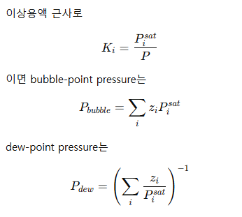
근데 이 이상으로 가면(예: Q가 있는 경우) 너무 복잡하므로 보통 시뮬레이터를 쓴다.
4.5 Ternary Liquid–Liquid Systems
이제는 2성분 VLE에서 벗어나 액액추출에 대해서 알아보자. 이건 가열해서 평형을 만드는게 아니라 어떤 물질을 넣어 층분리를 한 다음에 회수하는 방식이다.
3성분 액체 혼합물을 섞었더니 액체가 한 층으로 안 남고 두 층으로 갈라질 때, 각 층 조성이 뭐가 되고 양이 얼마나 되는지 삼각도표로 읽는 법을 배우는 파트라고 할 수 있다.
ternary liquid-liquid system은 3성분을 의미한다. 이때
(a) A와 C가 서로 거의 안 섞이는 경우
(b) A와 C가 서로 조금은 섞이지만 완전히는 안 섞이는 경우
두 케이스가 존재하는데, 쉬운건 a이지만 흔한 건 b이다.
A: 원래 feed 쪽에 많은 carrier liquid
B: 옮기고 싶은 용질(solute)
C: 새로 넣는 solvent
이고 대표적인 예시로 물(A) – 에틸렌글리콜(B) – 푸르푸랄(C) 이 있다. 푸르푸랄은 에틸렌글리콜을 흡수한다. 푸르푸랄이 용매, 푸르푸랄-rich 상이 extract, 물-rich 상이 raffinate가 된다.
이때 3성분계를 표시하는 가장 쉬운 방법이 삼각형 도표로 나타내는 것이다.
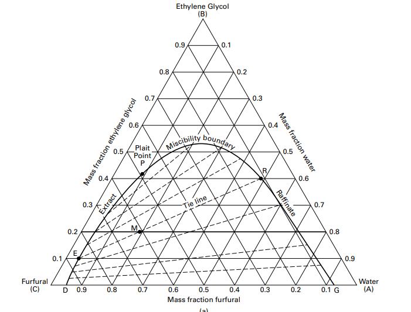
-삼각형의 꼭짓점 하나 = 순수 성분 100%
-한 변(edge) = 그 두 꼭짓점 성분만 섞인 2성분 혼합물
-삼각형 내부의 한 점 = 3성분 혼합물
이때 내부의 점은 3성분혼합물이고, 그 점에서 각 변에 내린 수선의 길이가 반대편 꼭짓점 퍼센트이다. 예를 들어 M점에서는 수선을 내리면 2:2:6인데 각각 20%, 20%, 60%의 물,에틸렌글리콜,푸르푸랄이다.
이때 무슨 miscibility boundary라고 있는데 이건 곡선 안쪽이 2상으로 됨을 의미한다. 얘는 타이라인을 거쳐서 평형시 두 상으로 분리되는데, 이때 E와 R로 나뉜다. plait point에서는 상이 두개로 나뉘지 않고 하나로 이어진다. 여기서는 두 액체상의 조성이 같아져 extract와 raffinate 구분이 없어진다.
이러한 3성분계는 자유도가 3이라 온도,압력+하나 조성만 정해져도 나머지는 다 정해진다. 이때 분배계수 KD가 중요하다.
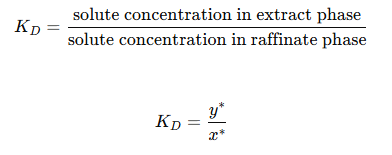
KD가 클 수록 좋은 것이다.
§4.7 SOLID–LIQUID SYSTEMS
이제 고-액 평형계를 보자. 이건 3개가 존재한다.
-Leaching(침출, 고액추출) <- 주 관심사
-Crystallization(결정화) SKIP
-Liquid adsorption(액상 흡착) SKIP
고체와 액체가 만났을 때, 어떤 성분은 액체로 빠져나오고, 어떤 경우엔 액체에서 고체가 생기고, 어떤 경우엔 액체 속 용질이 고체 표면에 달라붙는다. 그걸 평형 + 물질수지로 계산하는 파트라고 볼 수 있다.
1.Leaching
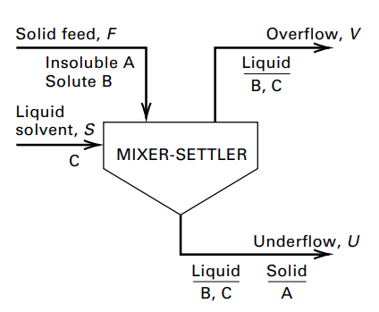
고체를 부숴서 넣고, 여기에 용매를 넣으면 액체와 액+고 케이크가 나온다. 이때 액체 상에 일부 고체물질이 용해된다.
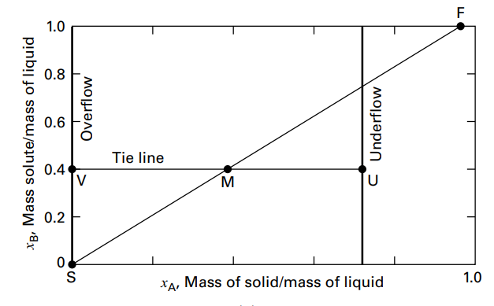
이걸 그래프로 나타낼 수 있는데, 분모에는 액체(B+C)질량이 들어가고 XA, XB는 각각 A질량/액체질량, B질량/액체질량을 의미한다. 이걸 XB-XA 그래프로 나타내면 위와 같다. 이때 피드점과 용매점을 찍고 혼합이 이뤄진 지점에 M을 찍고 타이라인을 그려서, 오버와 언더플로우를 나타낼 수 있다.
여기서 구하는 건 다음과 같다.
- underflow 조성
- overflow 조성
- underflow/overflow 유량
따라서, 문제푸는 순서를 정 하면 다음과 같다.
1.불용성 고체량 A, 뽑아낼 용질량 B, 용매량 C를 정리
2.필요한 경우 안 빠진 용질을 A 쪽에 합쳐서 effective solid 정의
3.underflow data로 XA vs XB 관계 준비
4.평형 조건으로 XB=YB잡기
5.그래프에서 U, V, M 찾기
6.inverse-lever-arm rule로 유량 계산
7.overflow로 회수된 용질량을 계산해 회수율 구하기
4.8 GAS–LIQUID SYSTEMS
4.2~4.4가 “증기-액체”였다면, 4.8은 상온에서 대부분 기체 상태인 성분들을 액체에 녹이는 문제이다. 이건 잘 안녹기 때문에 헨리의 법칙을 써야한다.
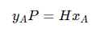